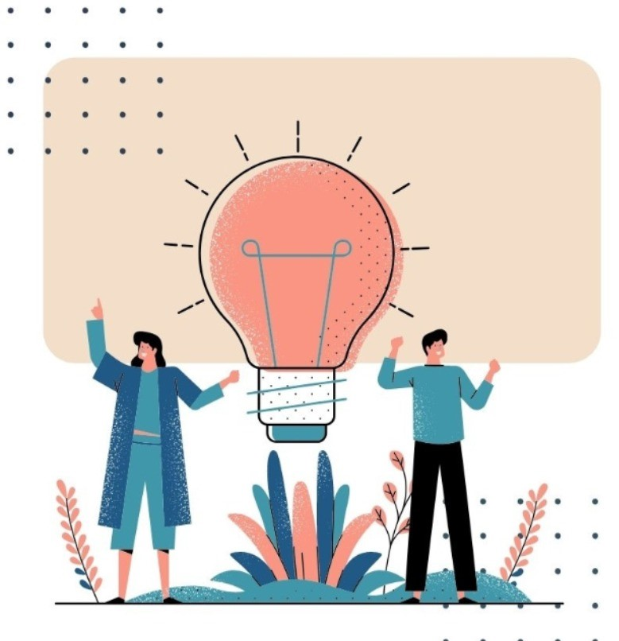

<main class="sobre-a-causa">
    <div class="descricao-empresa p-6">
        <h3 id="titulo-causa">
            Conheça as nossas causas 
        </h3>
        <div class="container-fluid">
            <div class="row">
                <div class="col-md-12">
                    <div class="row">
                        <div class="col-md-6">
                            <h2 class="sub-titulo">
                                O projeto
                            </h2>
                            <p class="txt">
                                O programe.se traz a proposta de inclusão do surdo no mercado de trabalho. No Brasil existe mais de 10 milhões de surdos, o que equivale a 5 % da população. O nosso objetivo é contribuir com a produção de mudanças capazes de transformar a ótica negativa predominante sobre a deficiência. Construindo oportunidade,  desenvolvimento profissional e pessoal capazes de modificar dados alarmantes sobre a falta de inclusão da população surda. Sabemos que a tecnologia avança cada vez mais, por isso, criamos uma plataforma capaz de ensinar de forma inclusiva e acessível.

                            </p>
                            <p class="txt">
                                Outro aspecto interessante é que além de oferecer uma plataforma inclusiva, 10% do valor de cada curso adquirido em nosso portal é destinado para instituições e ongs que atuam na inserção de surdos no mercado de trabalho, contribuindo assim para a transformação. 
                            </p>
                        </div>
                        <div class="col-md-6">
                            
                        </div>
                    </div>
                </div>
            </div>
        </div>
    </div>
</main>